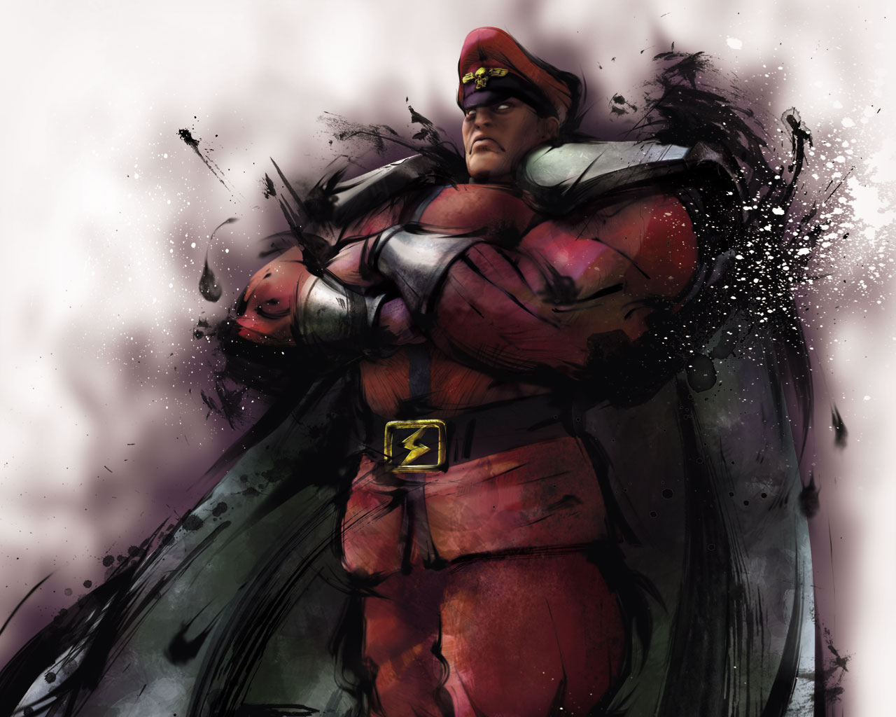

Characters
- Blanka
- Chun-Li
- E.Honda
- Gen
- Guile
- Ken
- M.Bison 
- Ryu
- Vega
- Zangief

He first appeared in the 1991 video game SF II as one of the 8 playable characters. Was originally deigned by Akira "Akiman' Yasuda. Blanka fights in a self-taught, animalistic style.
She first appeared in the 1991 video game SF II as the first female character. She is presented as a woman with a strong sense of justice.
He was introduced in Street Fighter II as part of the starting lineup. Designed by Akira Yasuda, the character was initially named "Sumo". He aims to be the greatest sumo wrestler ever.
Gen is introduced in the original Street Fighter,was known as one of the legends of martial arts. His fighting style incorporates various kung fu styles.
He debuted as one of the original eight characters in 1991's Street Fighter II. One of the most popular characters in the series.
Ken is one of the main characters, and was created in 1987. He is characterized as the former sparring partner, best friend and rival of the main character, Ryu.
He was introduced in SF II, and is a recurring character and villain in the whole gaming series.
Ryu is the protagonist of the Street Fighter series. Ryu has been the lead character since the first game appeared.
Vega is also known as Claw.Vega is a mask-wearing, claw-wielding fighter from Spain.
Created by Akira Yasuda, and first appeared in SF II. Zangief is considered the fist fighting character whose moveset is centered on grappling.